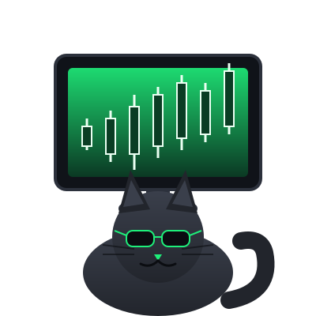

Ponscat (PCAT) doesn't promise a roadmap, a whitepaper, or "utility." It promises one thing: a cat, staring at candles, rooting for green. Built by Crypto Seekers Nation.
loading...

Real-time-feeling stats for the coin that makes no promises about being real-time.
Ponscat isn't trying to reinvent finance. It's a cat. It watches charts. Sometimes the charts are green, and the cat is happy. Sometimes they're red, and the cat watches anyway — because that's the job.
A community of people who spend too much time looking at charts, decided to make a mascot for it. Ponscat is that mascot. It doesn't do anything. That's the point.
If you're looking for a token with a 40-page whitepaper and a "utility" nobody uses, this isn't it. If you're looking for a cat who takes chart-watching as seriously as you do, welcome home.
No hidden taxes, no team vesting cliffhangers. Numbers below are placeholders until launch — check the CA above once it's live.
—
Fixed at launch. No minting, no surprises.
Locked
LP locked at launch. Details posted in the community channels.
0 / 0
No buy or sell tax. What you trade is what you keep.
Download a wallet that supports the chain $PCAT launches on, and fund it with a bit of the native token for gas.
Buy the native gas token from an exchange and send it to your wallet address.
Grab the CA from the hero section above (or our official socials) — never trust a CA from a random DM.
Paste the CA into your DEX of choice, set your slippage, and swap. Welcome to the couch.
Placeholder tiles for now — drop your best Ponscat memes in the community channels and we'll feature them.
It watches charts. That's it. There is no utility, and we're not going to pretend otherwise.
No. Nothing on this site is financial advice. Meme coins are extremely high risk — only ever spend what you can afford to lose.
Follow our socials below for the announcement. The contract address will appear at the top of this page the moment it's live.
The community behind Ponscat — people who watch charts for fun and decided a cat should get credit for it.